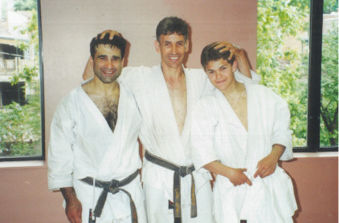

Hamid Chalah
Hamid Chalah a commencé sa formation au France Shotokan (Paris) avec Marc Zerhat, Yves Azema, Alain Gabrielli et Thiery Pierret et Patrick Masson à Cherbourg (Normandie).
En 1985, Hamid s'installe à Montréal. À l'époque, il était 1er kyu (ceinture brune de plus haut niveau).
Hamid a été promu shodan (ceinture noire de premier niveau) en 1988, nidan (ceinture noire de second niveau) en 1989 et sandan (ceinture noire de troisième niveau) en 1996.
En 1989, Hamid était membre d’Équipe Canada à la Nisei Week à Los Angeles (siège du Shotokan Karate of America).
Ohshima Sensei a promu Hamid au yodan en juin 2001.